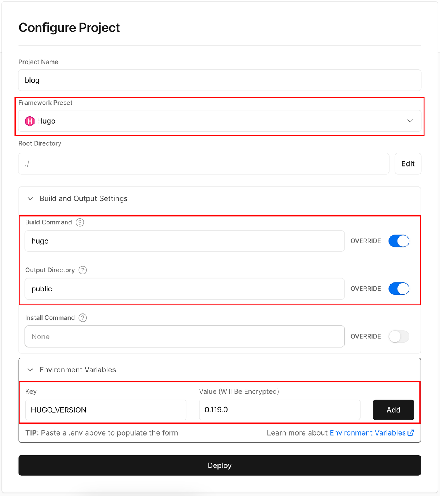
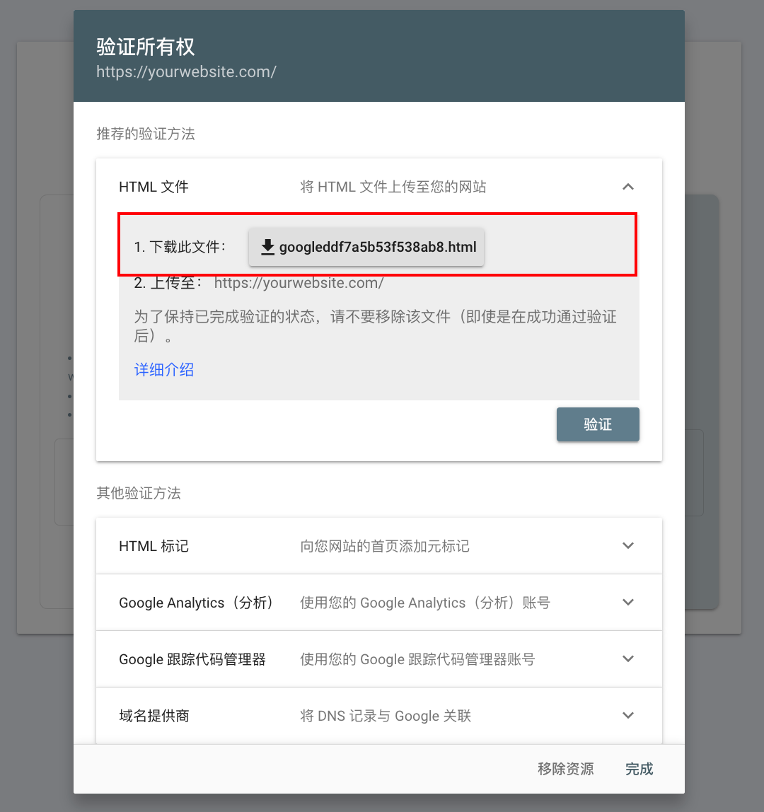
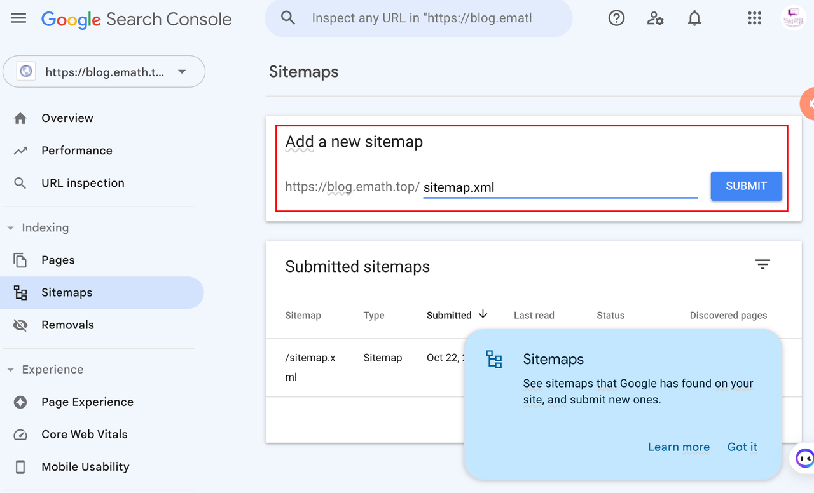
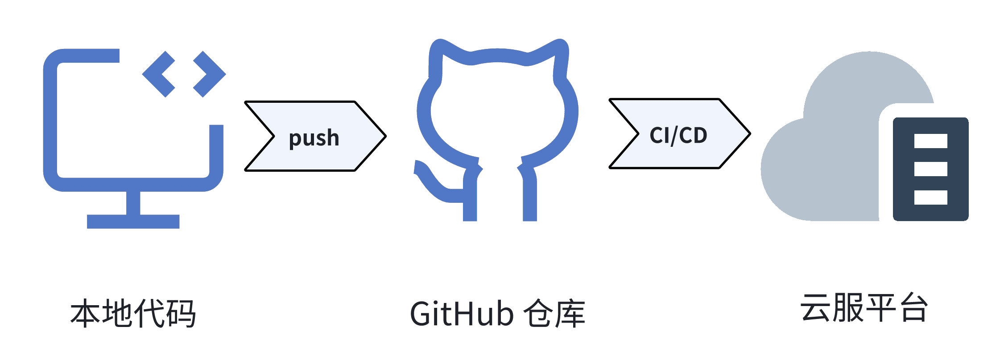

实现个人静态博客的全网访问
记录通过Vercel及GitHub Pages两种方式实现静态博客的部署及实现网站被搜索引擎收录，是上文基于HUGO搭建个人静态博客的后续工作。
一、背景
写博客的初衷，首先是方便自己查阅其次是可以给大家提供参考，所以需要将自己在本地搭建好的服务部署至云平台，方便随时访问。
首先想到的是GitHub Pages，从Github源码仓库中直接创建网站，不过考虑到国内访问GitHub Pages的速度等原因，它无法作为我的首选。其次是部署到自己的云服务器上，但存在配置低且资源有限的情况。最后选择了免费网站托管平台Vercel。
二、基于Vercel部署静态博客
1. Vercel简介
Vercel是一个云服务平台，支持静态和动态网站的部署和上线，当集成GitHub后便可实现当代码推送至GitHub仓库后，自动部署上线网站。具有以下优势：
- 个人版免费，并提供免费域名及Https证书。
- 内置黑盒CI/CD，无需过多配置即可实现自动集成部署。
2. 准备工作
将自己在本地基于HUGO搭建个人静态博客项目blog推送至GitHub仓库。
具体步骤如下：
1. 登陆GitHub创建一个私有仓库blog。
拿到仓库地址:https://github.com/youself/blog.git
2. .gitignore文件中添加public目录。
public目录作为hugo转换生成的结果，不能作为源码提交至Github。
3. 删除themes/jane目录下的.git文件。
jane是从Github上clone下来的，会有.git文件，推送代码时内层目录有.git文件，会被识别为另一个git仓库并不会上传该目录只会上传一个软链文件，这样会影响Vercel拉取主题信息从而导致转换失败。
4. 到本地blog项目目录下，依次执行执行以下命令，推送代码至远程仓库。
// 1.添加远程仓库
git add remote origin https://github.com/youself/blog.git
// 2.拉取远程代码（创建时可能会生成一个 README.md 文件）
git pull
// 3.本地代码添加到暂存区
git add .
// 4.提交代码
git commit -m "第一次提交"
// 5.推送至远程仓库
git push
3. 实践步骤
基本步骤：
按照下面步骤即可完成blog在Vercel平台的部署，Vercel会自动给我们分配域名，使用提供的网址即可访问。
1. 注册 Vercel 账号
选择 Hobby 类型 > 输入名称 > 下一步 > 使用GitHub账号认证即可。
2. 新建项目
Add New > Project
3. 导入Git仓库
4. 导入知道项目blog
5. 配置项目
选择框架Hugo > 构建命令 hugo > 输出目录public > 环境变量添加HUGO_VERSION:(hugo version 结果) > 部署

使用自己域名：
1. 选择刚刚部署的项目
2. 点击Domain进入Domain设置页面
3. 输入事先准备的CNAME类型的域名
4. 点击Add
完成上述步骤即可使用自己的域名访问Vercel上部署的博客。
4. 总结
至此，我们已经完成个人博客的云部署任务，也实现了个人静态博客的全网访问。简单上手体验了Vercel不禁想给它点赞，主要在以下几个方面，一是部署简单，二是访问快速，最后它还完全免费。
三、基于GitHub Pages部署静态博客
1. 选择原因
既然已经选择了Vercel，理论上云部署的任务已经完成，为什么又选择了GitHub Pages？
是的，Vercel已经帮我实现了目标且很方便，选择GitHub Pages是因为GitHub Action，我没有用过它。之前接触CI/CD的流水线是基于其他仓库及其他工具，所以我想利用这个机会亲自实践感受一下GitHub Action。
2. 实践步骤
1. 创建一个以{用户名}.github.io命名的公有仓库。
该仓库不能选择私有仓库否则将无法访问。
2. 创建GitHub个人访问令牌。
登陆GitHub > 点击用户头像 > Settings > Developer Settings > Personal access tokens > Tokens > Generate new token (classic)> 输入密码 > 输入 Token name 、 Expiration > 勾选repo及workflow权限 > Generate token > 复制令牌
3. 为私有仓库blog创建Action secrets
打开私有库 > Settings > Secrets and variables > Actions > New repository Secrets
- Name : ACCESS_TOKEN
- Secret : 令牌
点击 Add secret 即可生成。
4. 为私有仓库blog创建Action
打开私有库 > Action > New workflow > set up a workflow yourself
5. 编辑main.yml文件并提交
可以给该文件重命名，下面为参考模板。将模板内容修改好后提交，就会在yourname.github.io仓库生成一个新的分支gh-pages，并将转换的public目录下的文件推送至该分支。以后每次往私有库main分支提交代码都会触发该事件，将最新生成的博客更新至yourname.github.io仓库。
name: GitHub Pages
on:
push:
branches:
- main # 博客根目录的默认分支，这里是main
pull_request:
jobs:
deploy:
runs-on: ubuntu-20.04
concurrency:
group: ${{ github.workflow }}-${{ github.ref }}
steps:
- uses: actions/checkout@v2
with:
submodules: true
fetch-depth: 0
- name: Setup Hugo
uses: peaceiris/actions-hugo@v2
with:
hugo-version: '0.119.0' # 填写你的hugo版本，可用hugo version查看
extended: true # 如果你使用的不是extended版本的hugo，将true改为false
- name: Build
run: hugo
- name: Deploy
uses: peaceiris/actions-gh-pages@v3
if: ${{ github.ref == 'refs/heads/main' }} # 注意填写main
with:
personal_token: ${{ secrets.ACCESS_TOKEN}} # 如果secret取了其他名称，将ACCESS_TOKEN替换掉
external_repository: yourname/yourname.github.io # 填写远程仓库，不一定是这个格式，按照自己的情况写
publish_dir: ./public
#cname: www.example.com # 填写你的自定义域名。如果没有用自定义域名，注释掉这行
6. 配置yourname.github.io仓库GitHub Pages
打开公有库 > Settings > Pages > Branch 选择gh-pages 分支 > 点击Visit site 即可访问基于GitHub Pages 托管的博客网站。
3. 总结
参照上述步骤完成了基于GitHub Pages托管博客网站。以后每次往blog私有库mian分支推送代码都可以自动实现上述2个网站内容的自动更新，至此我的个人博客主流程也就告一段落了。
四、关联搜索引擎
上面步骤已经实现了输入网址访问博客，如果希望能大家通过搜索引擎检索到自己的博客，那么还需要让搜索引擎收录我们的博客。下面会选择谷歌和百度两种方式。
1. 谷歌收录
查看statcounter网站可以看到过去一年全球浏览器市场份额，谷歌是遥遥领先的。所以谷歌理所当然成了首选。
下面会整理谷歌收录步骤：
1. 打开谷歌收录网站
2. 选择网址前缀配置方式
输入博客网址 > 继续
3. 网站验证
需要验证该网站是我们的，有多种验证方式，我们选择HTML文件的方式。
下载此文件 > 保存至blog/static目录下
当执行hugo转换命令时就会将该文件转换至public目录下，我们就达到了验证的目的。

4. 提交站点地图
Sitemaps > 输入 sitemap.xml
sitemap.xml 为站点地图，hugo转换生成的public目录下有该文件。

5. 收录成功
一段时间后可以通过谷歌检索site:yourwebsite.com来确定收录情况及查阅浏览情况。
2. 百度收录
国内更多的是使用百度，所以第二个选择了被百度收录。 百度收录步骤与谷歌类似其中百度收录网站
五、尾注
结合上篇文章已经完成个人博客服务的完整流程，这个过程让我意识到当前云服务的强大，切实感受到了在不用关心底层架构的便利性。持续集成与持续部署带来的体验便是编码人员或是创作人员，只需要编写代码提交代码，其他的交由CI/CD流水线帮我们编译、部署、上线。
接下来的创作灵感，也可以基于强大的云平台助力自己的idea快速实现，配置固定的流水线帮助自己快速集成发布减少重复性工作。既然关于“博客”话题的整理流程已经梳理完毕，关于使用的细节等内容可能短期内不再梳理，得等到合适的时机。
最后附上博客部署的简略流程：
